ParkViewRT: vision-based parking slot monitoring
One camera view can cover dozens of parking slots. A sensor covers one. This project takes the camera route seriously — and then spends most of its effort proving the result is trustworthy rather than just plausible.
| Term | Stands for | What it is |
|---|---|---|
| FCI | Faculty of Computing and Informatics | One of the two Multimedia University car parks monitored — the busy one, 78 slots |
| FAIE | Faculty of Artificial Intelligence and Engineering | The second car park, a U-shaped layout, 24 slots by day and 18 at night |
| MMU | Multimedia University | The campus in Cyberjaya, Malaysia where the footage and survey were collected |
| YOLO | You Only Look Once | A family of single-pass object detectors. The n suffix (yolo11n) marks the smallest, fastest variant |
| FYP | Final Year Project | The two-trimester capstone this work was submitted for |
| False available | — | The system reporting a slot as free when a car is in it. The error that actually costs a driver something |
| Occluded | — | A monitored slot the camera cannot resolve — tree cover, glare, a blocking vehicle. Reported as its own state rather than guessed |
| Unmonitored | — | A slot drawn in the layout but outside the camera's usable view, so never given a status |
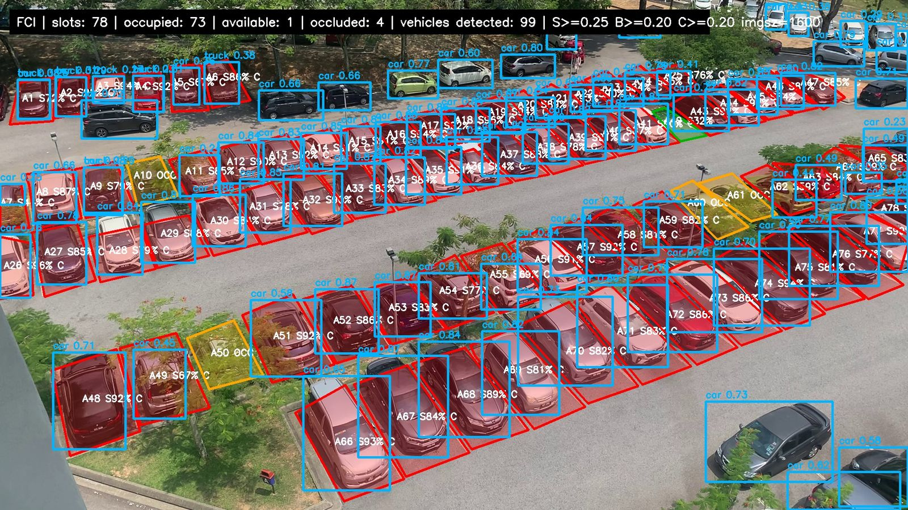
The problem worth solving
Nobody knows whether a campus car park has space until they are already inside it, circling. The standard fix — a sensor in every slot — means installing and maintaining hardware per parking space. A camera sees an entire row at once and needs no change to the ground.
I did not want to take that premise on faith, so the first trimester was spent establishing it. A survey of 88 respondents at Multimedia University put the two most common complaints as difficulty finding an empty space (62 respondents) and time wasted searching (60). Forty-four named the faculty parking area specifically as the worst. Sixty-four strongly agreed that a smart parking system should exist. A separate observation study — three sites, three time windows, fifteen photographs — found the 10 a.m.–2 p.m. window consistently jammed.
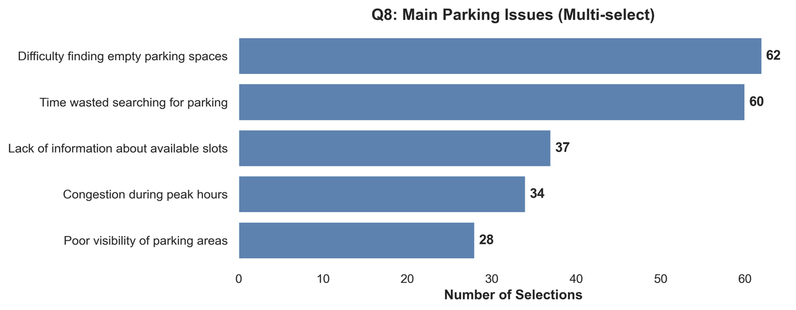
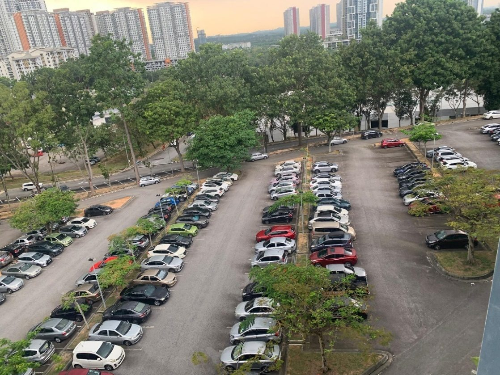
How it works
Vehicles are detected by a pretrained Ultralytics YOLO model — no custom training — filtered to the car and truck classes, at 1600 px inference size and 0.20 confidence. The interesting half is what happens next: turning “there is a car roughly here” into “slot A47 is occupied”.
Every monitored slot is a hand-labelled polygon — 197 of them across four video variants (FCI day and night, FAIE day and night). For each detection, Shapely computes two ratios: the intersection over the slot's own area, and the intersection over the detection box's area. A slot counts as occupied if either ratio clears its threshold, or if the detection's centre falls inside the polygon, or the polygon's centroid falls inside the box.
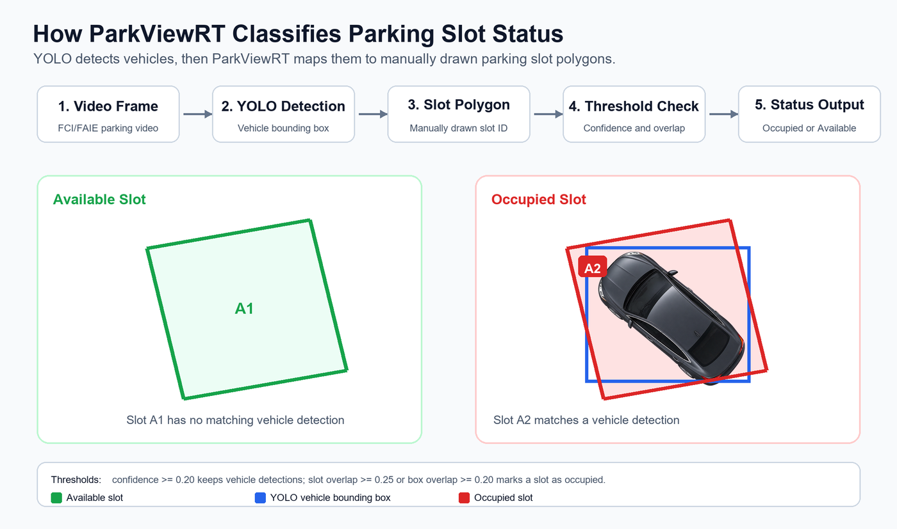
The problem the naive version has
In an angled row, one car overlaps two polygons, so a naive rule marks two slots occupied and the dashboard starts inventing cars. The fix is a ranked greedy assignment: each detection can claim only one slot, and match types are scored from strongest geometric signal to weakest fallback.
- Detection centre inside the polygon → 3 + overlap
- Slot-area overlap above threshold → 2 + overlap
- Box-area overlap above threshold → 1 + box overlap
- Polygon centroid inside the detection box → 0.5 + overlap
Highest score wins the detection; everything else has to find its own car.
Three states, not two
Some FCI slots sit under permanent tree cover and the detector genuinely cannot resolve them in daylight. A binary system has to guess, and guessing “available” there is the worst thing it could do to a driver. So the model has a third state — occluded — plus a fourth, unmonitored, for slots that exist in the layout but fall outside the camera's usable view. The dashboard stays honest about what it can and cannot see.
Architecture
A FastAPI service exposes ten endpoints: root, health and config; slot status for a location, plus its demo, video-samples and video-snapshot variants; video streaming and video metadata; and a debug route that returns the annotated JPEG above. The frontend sends the browser's current playback frame index; the backend reads that exact frame from the original source video with OpenCV, runs detection, and returns the per-slot verdict.
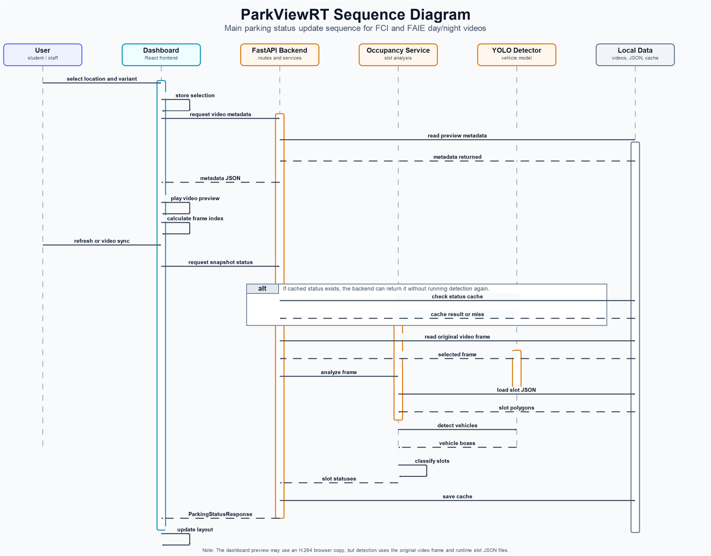
Two decisions in here that were not obvious to me at the start:
- The analysis path and the playback path are separate. The recordings are HEVC
.MOVfiles that browsers refuse to play. Rather than transcode the source and change the pixels being analysed, a tool generates H.264 copies purely for preview. OpenCV always reads the original. - The frame-status cache key includes everything that could change the answer — location, variant, source video identity, slot file identity, both thresholds, inference size and frame index. Relabel a polygon or move a threshold and the cache misses, as it should. A cache that can serve a stale verdict is worse than no cache.
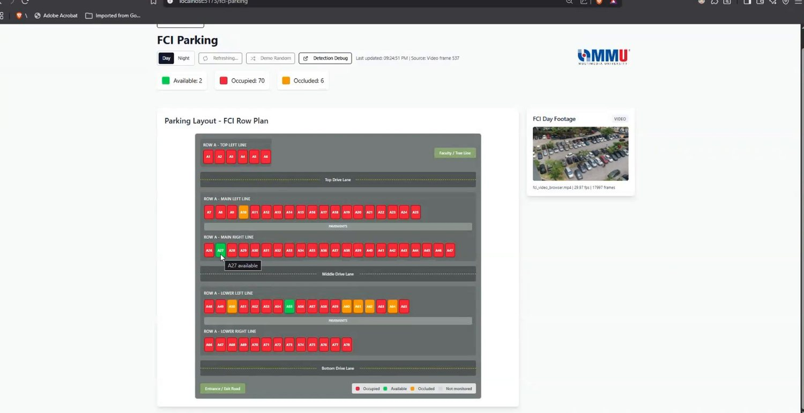
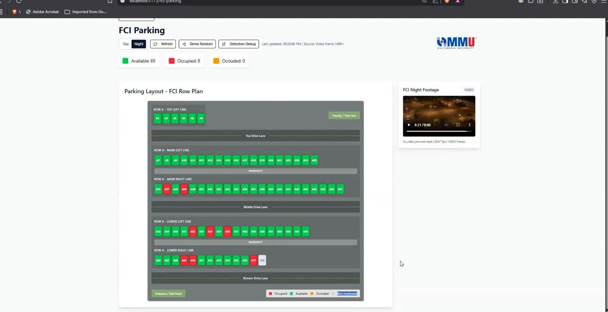
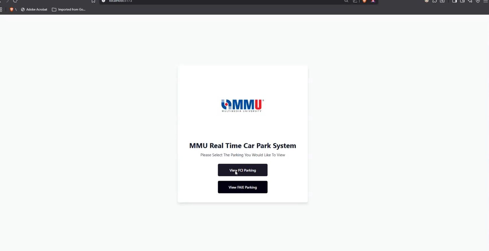
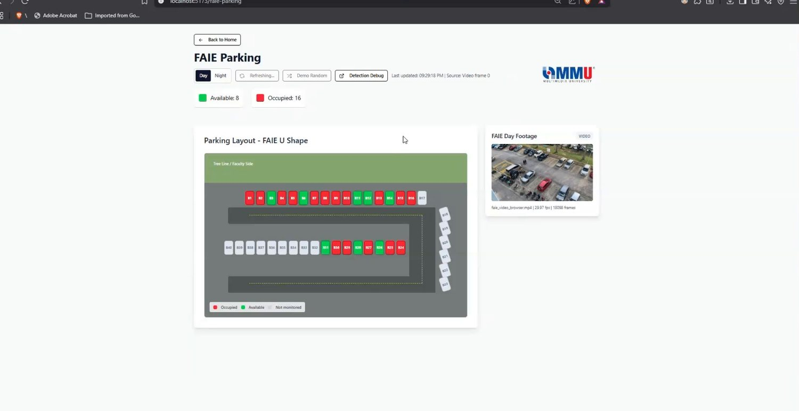
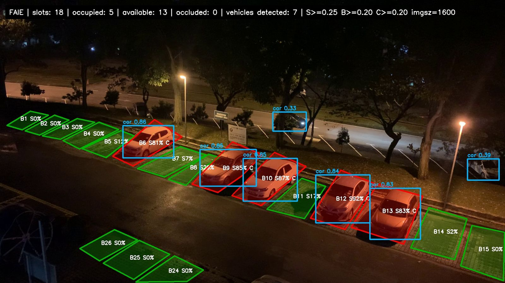
Evaluation — the part I spent the most time on
It would have been easy to report a number from a handful of frames and move on. Instead I built a scripted, re-runnable evaluation harness — about 2,130 lines across eight scripts — and a ground-truth set I labelled by hand: eleven evenly spaced frames from each of the four video variants, giving 44 frames and 2,167 monitored slot labels. Every row is marked verified; a verify_ground_truth.py gate rejects preliminary rows by default, and the flag that overrides it is documented as diagnostic-only and not for reported results.
The label mix reflects real conditions rather than a balanced set: 1,106 occupied, 1,009 available, 52 occluded. FCI at midday is 92% full; FCI at night is 90% empty.
Four models, identical conditions
| Model | Correct | Accuracy | False “available” | Avg pipeline |
|---|---|---|---|---|
| yolo11n | 2,167 / 2,167 | 100.00% | 0 | 515.6 ms |
| yolo12n | 2,140 | 98.75% | 12 | 877.8 ms |
| yolo26n | 2,070 | 95.52% | 73 | 541.6 ms |
| yolov8n | 2,033 | 93.82% | 134 total mismatches, 113 false-available | 601.1 ms |
The newest checkpoint was not the best one. yolo11n was both the most accurate and the fastest, and the two newer models made exactly the error that matters most.
Telling a driver an occupied slot is free sends them to a slot that is not there. Telling them a free slot is taken merely costs them an option. These are not symmetric, so I reported false-available separately rather than folding everything into one accuracy figure — and generated annotated examples of each competing model producing that specific failure.
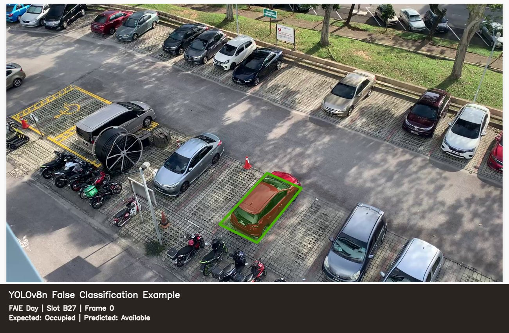
Then 210 threshold combinations
Seven confidence values × six slot-overlap thresholds × five box-overlap thresholds, all scored against the same 2,167 labels. Accuracy peaked sharply at confidence 0.20 — 99.54% at 0.15, 100.00% at 0.20, 99.08% at 0.25 — and thirty different combinations reached a perfect score there.
The ranking function's top pick was slot 0.40 / box 0.30. I kept the production values of 0.25 / 0.20 instead. When thirty configurations tie on the evaluation set, the tie-break should be which one is least likely to be overfitted to it, and the more permissive thresholds already in use had a wider margin before behaviour changed. The report states the ranking result and the reason for overriding it.
100% here means 2,167 out of 2,167 labels correct on 44 frames drawn from four specific recordings, at fixed camera angles I labelled polygons against. It is not a claim about vision-based parking detection in general. Broader claims would need recordings across more days, weather, camera positions and occupancy levels — which the report says explicitly, because a portfolio number that cannot survive a follow-up question is worth nothing.
Honest limitations
- Recorded video, not a live camera feed — no accessible stream from the campus car parks existed.
- A pretrained model, not one I trained or fine-tuned. That was a scope decision, and the write-up says so plainly.
- No database and no server-side history yet; state lives in slot JSON files plus a frame-status cache.
- Slot polygons are tied to the camera angle used during labelling. Move the camera and they need redrawing.
- Local deployment only — no container, no cloud, no CI.
What I would do next
In order of value: persist frame verdicts so occupancy becomes a time series rather than an instant, which makes forecasting possible; fine-tune on frames from these actual cameras to see whether the occluded slots become resolvable; and replace manual polygon labelling with a semi-automatic pass so a new site does not cost a day of clicking.
Verification and delivery
23 pytest tests over the status routes, a passing production build, and per-variant validation of metadata, snapshot and debug-image endpoints for all four videos. Documentation is a 16 KB README with a troubleshooting section, six design documents, and a five-step runbook for reproducing the evaluation from scratch. The project was also written up as a ten-section commercialisation proposal with a SWOT analysis.